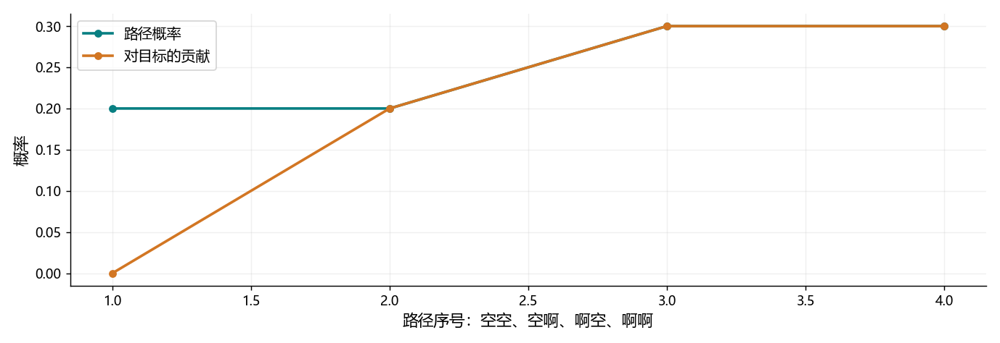

看图理解 · 跟着推演 · 对照真实结果
第13课 · 把声音对齐成文字：CTC 与识别评测
用两步概率手算 CTC，再弄清错字率和流式识别到底测什么。
点播放开始；点右侧小节可跳到不懂的部分。进度保存在当前浏览器。
先看视频，再动手
不必先读完正文。跟着视频暂停预测，看到运行图时解释横轴、纵轴和曲线，再做下面的自测。完整图文保留作查阅；视频讲清本课核心算例，不把看完等同于掌握全部专题。
先修：先理解数组形状、概率以及 Mel 特征；不需要训练过识别模型。
- 按正确顺序折叠 CTC 路径
- 手算文本概率和负对数损失
- 区分识别准确性、对齐与流式延迟
跟着运行：注释代码、实际输出与结果图
下面代码在生成本站时实际执行。这里只是教学小实验，不是完整模型训练或业务设备测评。
import numpy as np
# 行是时间步；列依次为 blank、啊
p = np.array([[0.4, 0.6], [0.5, 0.5]])
paths = np.array([[0, 0], [0, 1], [1, 0], [1, 1]])
# 每条路径的两步概率相乘
prob = p[0, paths[:, 0]] * p[1, paths[:, 1]]
valid = np.array([False, True, True, True])
mass = prob * valid # 非法路径对目标文本贡献为零
total = mass.sum()
loss = -np.log(total)
idx = np.arange(1, 5)
print("路径概率", prob.round(3).tolist())
print("目标概率", round(total, 3), "损失", round(loss, 5))
assert np.isclose(total, 0.8)
本次实际输出
路径概率 [0.2, 0.2, 0.3, 0.3] 目标概率 0.8 损失 0.22314

闭卷自测：两条录音分别参考 100 字错 12 字、参考 10 字错 5 字，总 CER 是多少？
先累计：错误 17，参考 110，CER=17/110≈15.45%；不能简单平均两条百分比。
逐字讲稿 · 可定位回看
想象你说打开空调四个字，有人把开拖得很长，有人中间停一下。每十毫秒取一次特征，一秒约一百帧，却只有四个字，所以不能机械地每二十五帧分配一个字。
先看流程的四个盒子。波形是密密麻麻的样点，特征是按窗提取的局部信息，编码器还可能把时间步压缩。最后的文字长度，通常比前面的时间位置少得多。
我们这一课把问题缩到两个输出时间步，词表只有空白和啊。缩小后可以把全部路径列完，看到识别训练究竟在提高哪个概率，再回到真实长录音。
第一条示意路径是啊、啊、空、啊。先把挨着的两个啊合并，得到啊、空、啊；然后删空，得到两个啊。中间的空白把两个相同字隔开了。
如果先删空，原路径会变成三个连续的啊，再合并只剩一个啊。这就是为什么折叠顺序不能交换。遇到重复字，先画出空白位置，再手工检查一次。
这里的空白是对齐机制说这一输出步暂时不发新字，不是声音类别静音。输入明明有人讲话，模型仍然可以在某些输出步给空白较大概率。
第一步空白概率零点四，啊的概率零点六；第二步两者都是零点五。两步每步两种选择，一共四条路径，每条概率是两个对应数字相乘。
空空是零点四乘零点五，等于零点二，折叠成空文本。空啊也是零点二；啊空是零点三；啊啊是零点三，但相邻重复合并以后仍然是一个啊。
目标如果是一个啊，后三条都合法。不要因为啊啊看起来有两个字符就排除它，先按折叠规则判断文本，再决定这条路径有没有给目标贡献概率。
三个合法贡献是零点二、零点三、零点三，加起来是零点八。最高单条路径只有零点三，所以拿最高路径代替总概率，会把这道训练目标算错。
负自然对数把提高目标概率变成降低损失。零点八的负对数约零点二二三；概率接近一时损失接近零。这里没有百分号，损失也不是错字率。
真实序列路径数会爆炸，不能继续暴力列举。动态规划把到达相同目标位置的路径概率合并，对数域计算还避免很多小概率连乘导致数值下溢。
先看概率矩阵，它的两行表示两个输出时间步，两列表示空白和啊。路径矩阵四行，每一行存两个类别编号，零代表空白，一代表啊。
索引表达式按每条路径分别取第一步和第二步的概率，再逐元素相乘，得到四个数。valid 列表只把第一条标为假，因为它折叠后没有啊。
乘上布尔列表后，非法路径贡献变成零，其他概率保留。最后求和再取负对数。这里使用显式合法表是为了看懂两步算例，不是完整 CTC 损失实现。
横轴依次是空空、空啊、啊空、啊啊，纵轴都是概率。路径概率第一点在零点二，目标贡献第一点在零，因为空文本不是我们要训练的答案。
后三个位置两条线重合，说明这些路径概率全部属于目标啊。把目标贡献加起来得到零点八，打印损失约零点二二三一四，与刚才手算一致。
这张图检验的是概率和折叠规则，不是某个识别器的效果。没有输入真实语音，没有训练声学参数，也不能把这个损失和另一份数据的模型损失直接比较。
假设特征一百帧，编码器约四倍下采样，可能只输出二十五步。准确数值还要看卷积参数，传入损失的有效长度必须对应这二十五步，不能还写一百。
常见损失接口把张量排成时间、批次、类别，也就是 T、B、C。若网络给的是批次、时间、类别，需要明确换轴；类别概率应先转成对数概率。
目标是啊啊时，最短合法路径是啊、空、啊，至少三步。若只有两步，目标概率就是零。把无穷损失直接屏蔽，会隐藏长度错误，应该先查下采样和重复字。
把参考打开空调和预测打空调啊并排看。删除参考里的开，再在结尾插入啊，就能变成预测，最少两次编辑，而不是后面位置都错了。
参考一共四个字，所以字错误率是二除以四，等于百分之五十。替换、删除、插入都计入分子；插入特别多时，错误率甚至可以超过百分之百。
多条录音要先累加错误和参考字数，再相除。标点、数字写法、大小写如何规范，要在比较前固定，不能某个模型遇到十二和数字十二时临时放宽。
一个模型即使使用 CTC，只要编码器读完整句未来，仍不能直接说它低延迟流式。真正分块处理时，必须限制未来上下文并正确保存跨块状态。
第一段字幕出现得早，但后来每次都改字，体验也可能不好。请分别记录首字时间、稳定文字时间、句末结果以及最终错误率，不要用一个数字代表全部。
你的实习作品可以先固定预训练基线，做领域词错误分析和可靠评测。热词要有不该触发的负例，微调要有通用回归集，才能解释改善有没有代价。
先暂停：啊、空、啊、啊折叠成什么？答案是两个啊，因为末尾相邻重复先合并，中间空白再删除。请在纸上按这两步写，不靠眼睛猜。
第二题：目标两个相同字，两个输出步够不够？不够。必须有一个空白把它们隔开，至少三个有效输出步，这是长度检查的重要边界情况。
最后一题，一段一百字错十二，另一段十字错五，总体错误率是十七除以一百一十，约百分之十五点四五。学完请自己改概率、重算损失，并解释图哪一处会变。
适用边界与参考正文
两步 NumPy 例子只验证 CTC 路径概率；未训练或推理真实 ASR。完整动态规划、RNN-T 训练和真实流式系统需要后续实验。
图、公式、代码结果均由本站制作；旁白是本地中文语音合成，不是教师真人录音，也不是 NotebookLM 生成。没有向 Google 上传项目材料。